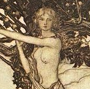

The Aesir Gods
Odin, the All-father. Leader of the Aesir and master of runes.

Thor, wielder of Mjölnir. Strongest of them all.

Freyja, goddess of love and fertility. A Vanir goddess.
Loki, half-god half-giant. He is the god of mischief.